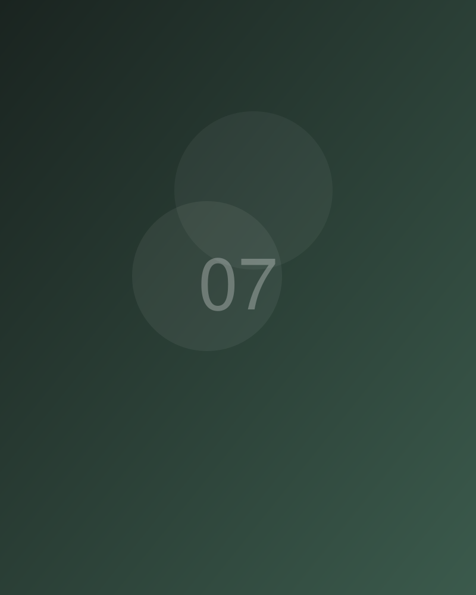
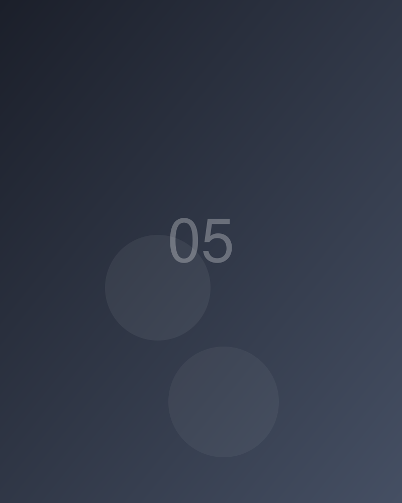
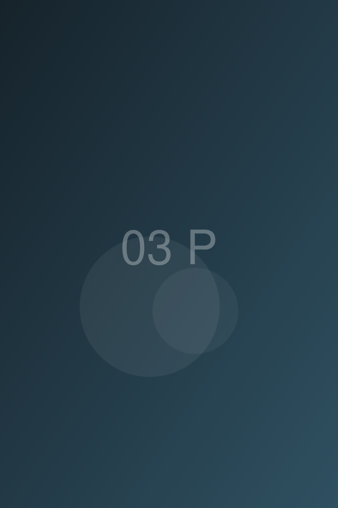
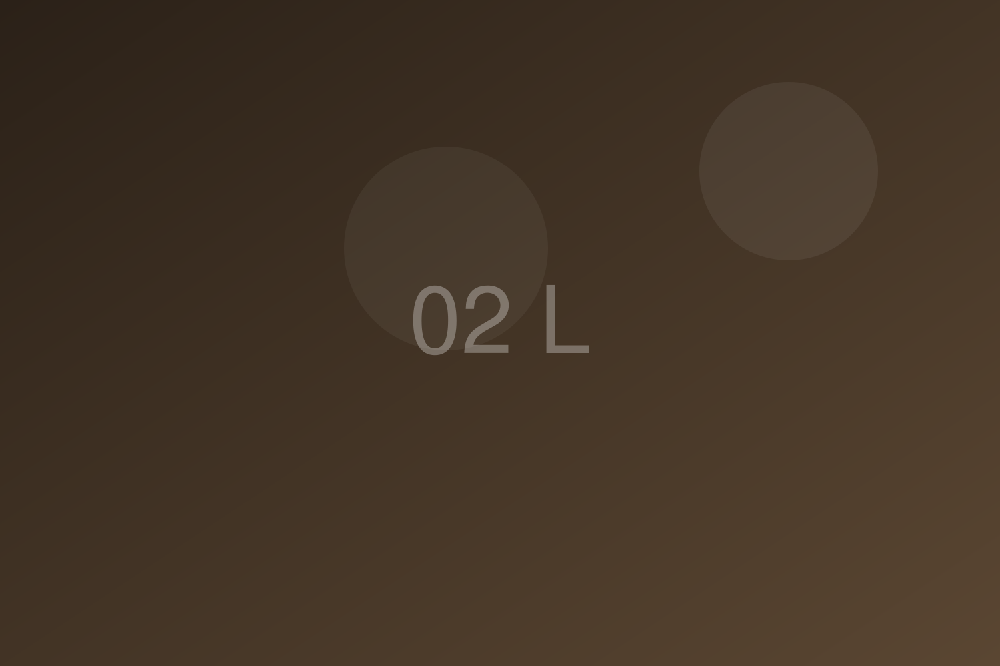
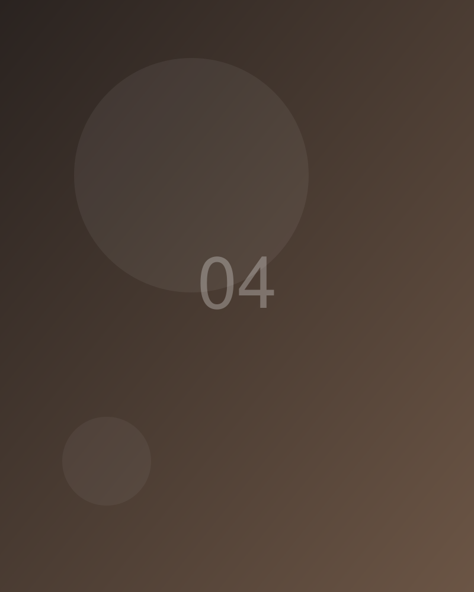
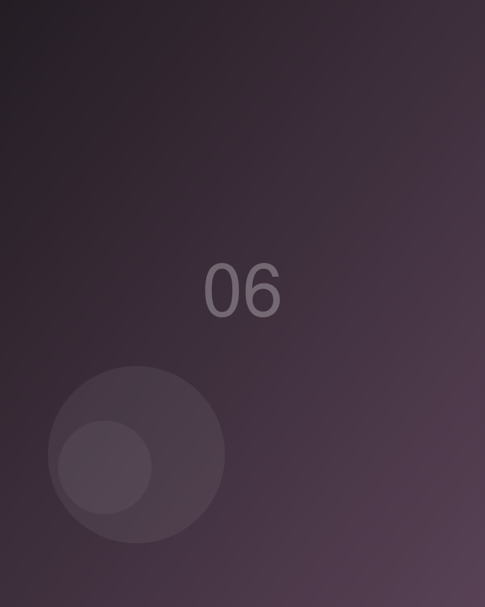
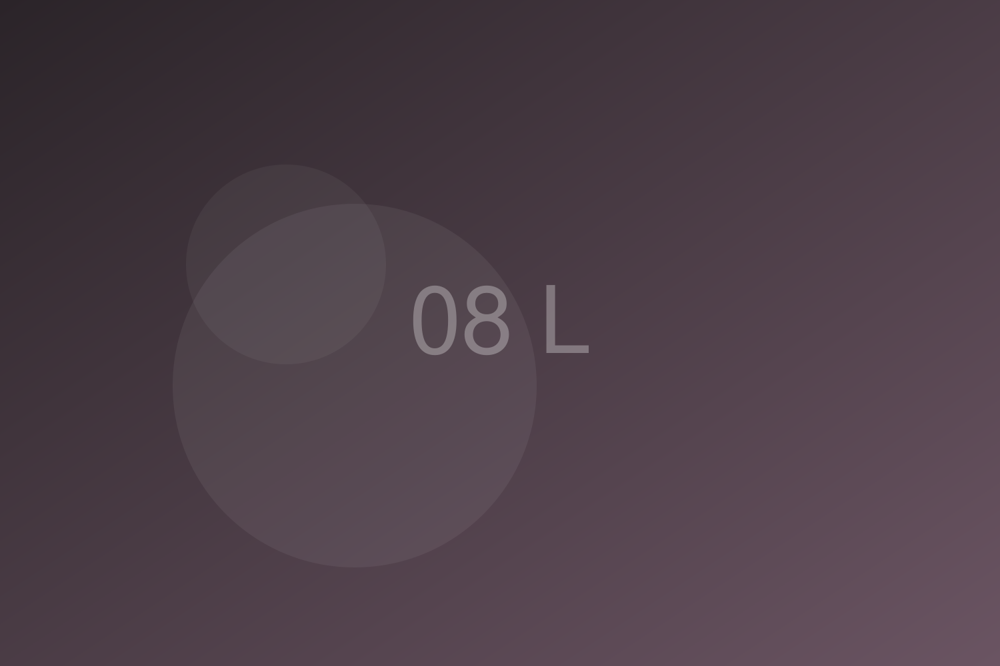

Fidelis Müller
Fotograf
Ich fotografiere Menschen, Licht und die stillen Momente dazwischen — am liebsten dort, wo beides zusammenfällt.







Fotograf
Ich fotografiere Menschen, Licht und die stillen Momente dazwischen — am liebsten dort, wo beides zusammenfällt.



